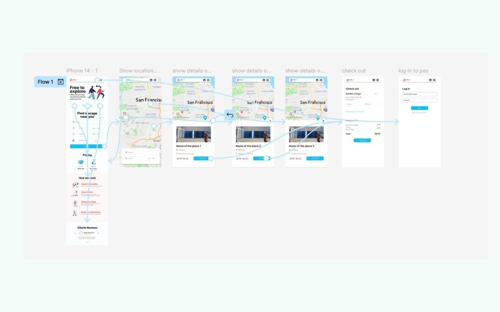
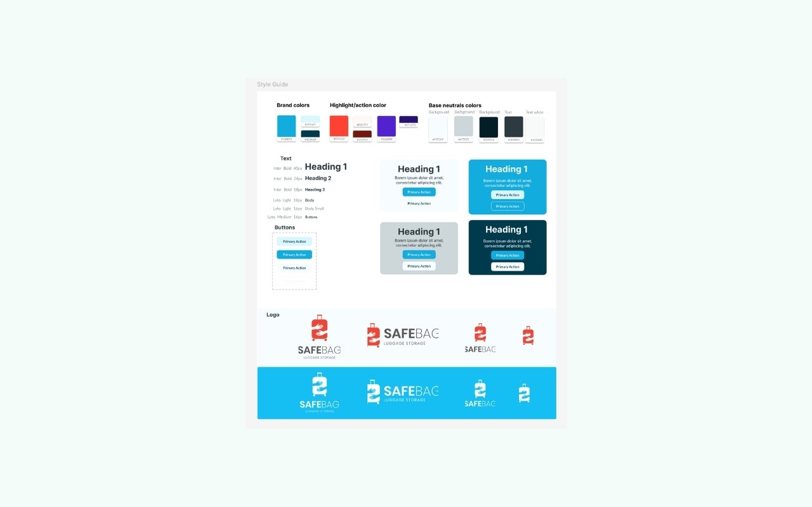

The problem
Travelers store their luggage and explore a city. It sounds simple, but the design problem underneath it isn't. This project was about creating confidence at the moment of highest uncertainty: a user in an unfamiliar city, under time pressure, handing over their belongings to a stranger. Every design decision came back to that context.
The service had no existing mobile interface. Users needed a way to find nearby storage locations, book a slot, drop off their bag, and retrieve it later, all while distracted, rushed, and operating in an unfamiliar environment. The design needed to minimize friction and communicate trustworthiness immediately.
My role
I led design end to end as the solo designer on the team: defining user flows, establishing visual direction, and designing the full UI system, including art direction of the logo. The goal was a cohesive product, not a collection of screens, that felt confident and clear from first open to pickup confirmation.
Design decisions
The core flows (discovering locations, booking, drop-off, and pickup) were designed for one-handed mobile use under time pressure. I established a visual language that prioritized trust signals: clear hierarchy, strong calls to action, and spatial logic that made the app scannable rather than demanding to read.

Color, spacing, and typography were used intentionally to communicate reliability without feeling sterile. The interface needed to feel approachable and quick. Not like a form to fill out, but a path to follow.

Outcome
The final design delivers a clear, end-to-end booking experience that balances user confidence with the service's operational needs. It's built for the context it lives in: mobile-first, low cognitive load, and fast, because travelers don't have time for anything else.